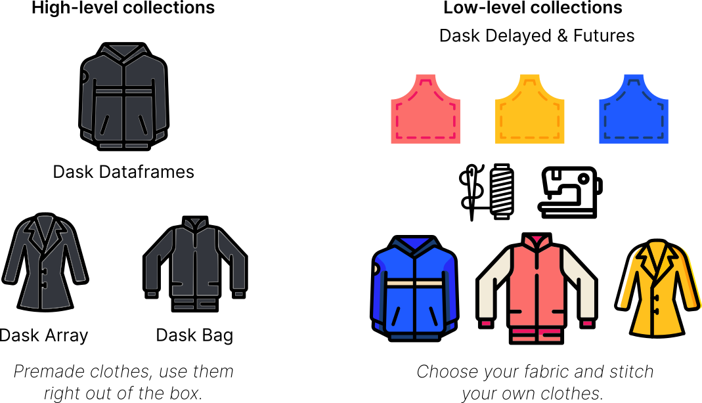
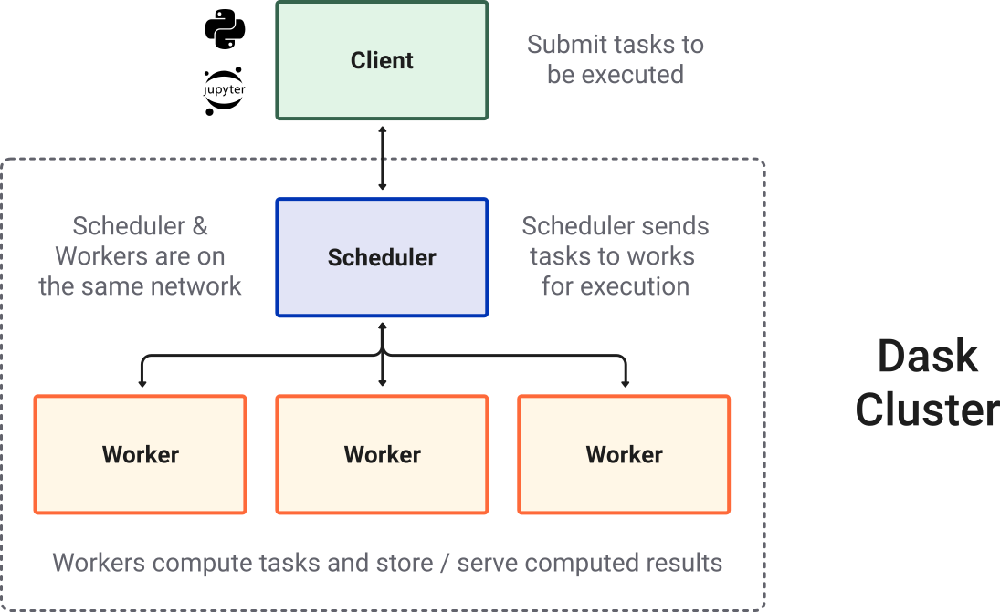
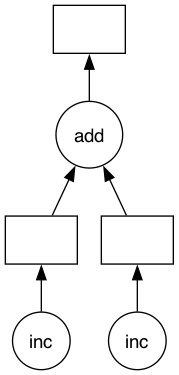
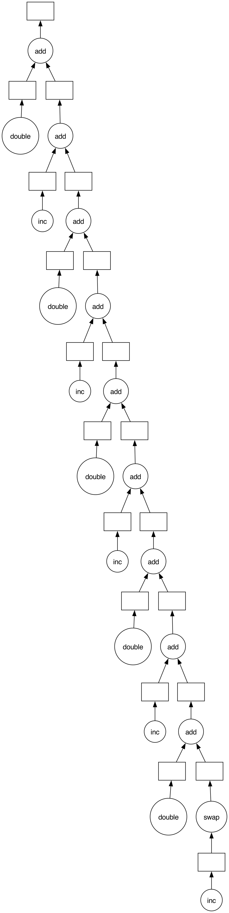
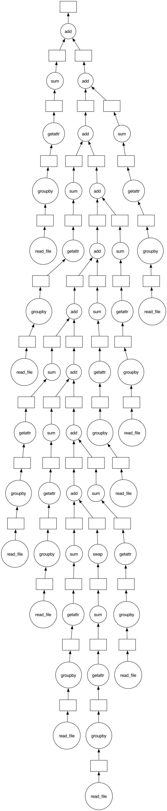

Big Data: Dask tutorial
Lviv University
Intro

- Dask is a parallel and distributed computing library that scales the existing Python and PyData ecosystem.
- Dask can scale up to your full laptop capacity and out to a cloud cluster.
Installation
Data for this lecture
Download and set DATA_DIR
Download dask_data.zip and unzip it anywhere. It contains the NYC flights CSVs (1990–1999), a 200k-row extract of the 2015 NYC taxi data, and prep.py, which generates the remaining datasets.
Every code cell below reads its data through one variable. Set it to the folder you unzipped into:
An example Dask computation
Example
In the following lines of code, we’re reading the NYC taxi cab data from 2015 and finding the mean tip amount.
- Import
- Create client.
Client
Client-81138fd6-c2fe-11f1-98a0-020000000000
| Connection method: Cluster object | Cluster type: distributed.LocalCluster |
| Dashboard: http://127.0.0.1:55616/status |
Cluster Info
LocalCluster
cb88426f
| Dashboard: http://127.0.0.1:55616/status | Workers: 4 |
| Total threads: 12 | Total memory: 18.00 GiB |
| Status: running | Using processes: True |
Scheduler Info
Scheduler
Scheduler-0e9f6fb2-3f4e-48d5-9989-7faf44630958
| Comm: tcp://127.0.0.1:55617 | Workers: 0 |
| Dashboard: http://127.0.0.1:55616/status | Total threads: 0 |
| Started: Just now | Total memory: 0 B |
Workers
Worker: 0
| Comm: tcp://127.0.0.1:55640 | Total threads: 3 |
| Dashboard: http://127.0.0.1:55645/status | Memory: 4.50 GiB |
| Nanny: tcp://127.0.0.1:55626 | |
| Local directory: /var/folders/d4/0b32xzkd12gcwpwf2dqwdht80000gn/T/dask-scratch-space/worker-814lminm | |
Worker: 1
| Comm: tcp://127.0.0.1:55639 | Total threads: 3 |
| Dashboard: http://127.0.0.1:55642/status | Memory: 4.50 GiB |
| Nanny: tcp://127.0.0.1:55631 | |
| Local directory: /var/folders/d4/0b32xzkd12gcwpwf2dqwdht80000gn/T/dask-scratch-space/worker-u6g6i4s0 | |
Worker: 2
| Comm: tcp://127.0.0.1:55649 | Total threads: 3 |
| Dashboard: http://127.0.0.1:55658/status | Memory: 4.50 GiB |
| Nanny: tcp://127.0.0.1:55635 | |
| Local directory: /var/folders/d4/0b32xzkd12gcwpwf2dqwdht80000gn/T/dask-scratch-space/worker-9q8j6ke7 | |
Worker: 3
| Comm: tcp://127.0.0.1:55650 | Total threads: 3 |
| Dashboard: http://127.0.0.1:55657/status | Memory: 4.50 GiB |
| Nanny: tcp://127.0.0.1:55637 | |
| Local directory: /var/folders/d4/0b32xzkd12gcwpwf2dqwdht80000gn/T/dask-scratch-space/worker-9o15vo6m | |
- Read data.
- Groupby and mean
What is Dask?
Many parts
There are many parts to the “Dask” the project:
- Collections/API also known as “core-library”.
- Distributed – to create clusters
- Integrations and broader ecosystem
Dask Collections
Overview
Dask provides multi-core and distributed+parallel execution on larger-than-memory datasets

- High-level collections: Dask provides high-level Array, Bag, and DataFrame collections that mimic NumPy, lists, and pandas but can operate in parallel on datasets that don’t fit into memory.
- Low-level collections: Dask also provides low-level Delayed and Futures collections that give you finer control to build custom parallel and distributed computations.
Dask Cluster
Cluster
Most of the times when you are using Dask, you will be using a distributed scheduler, which exists in the context of a Dask cluster. The Dask cluster is structured as:

Dask Ecosystem
Libraries
In addition to the core Dask library and its distributed scheduler, the Dask ecosystem connects several additional initiatives, including:
- Dask-ML (parallel scikit-learn-style API)
- Dask-image
- Dask-cuDF
- Dask-sql
- Dask-snowflake
- Dask-mongo
- Dask-bigquery
Dask Ecosystem
Community ibraries
Community libraries that have built-in dask integrations like:
- Xarray
- XGBoost
- Prefect
- Airflow
Dask deployment libraries
- Dask-kubernetes
- Dask-YARN
- Dask-gateway
- Dask-cloudprovider
- jobqueue
Dask Use Cases
Use cases
Dask is used in multiple fields such as:
- Geospatial
- Finance
- Astrophysics
- Microbiology
- Environmental science
Check out the Dask use cases page that provides a number of sample workflows.
Dataframe
Dask DataFrame - parallelized pandas
Description
Looks and feels like the pandas API, but for parallel and distributed workflows.
At its core, the
dask.dataframemodule implements a “blocked parallel”DataFrameobject that looks and feels like the pandas API, but for parallel and distributed workflows.One Dask
DataFrameis comprised of many in-memory pandasDataFrames separated along the index.One operation on a Dask
DataFrametriggers many pandas operations on the constituent pandasDataFrames in a way that is mindful of potential parallelism and memory constraints.
Dask DataFrame

Dask DataFrame
Related Documentation
DataFrame
When to use dask.dataframe
pandas is great for tabular datasets that fit in memory. A general rule of thumb for pandas is:
“Have 5 to 10 times as much RAM as the size of your dataset”
~ Wes McKinney (2017) in 10 things I hate about pandas
Here “size of dataset” means dataset size on the disk.
Dask becomes useful when the datasets exceed the above rule.
In this notebook, you will be working with the New York City Airline data. This dataset is only ~200MB, so that you can download it in a reasonable time, but dask.dataframe will scale to datasets much larger than memory.
DataFrame
Set up your local cluster
Create a local Dask cluster and connect it to the client.
Client
Client-823b7ed2-c2fe-11f1-98a0-020000000000
| Connection method: Cluster object | Cluster type: distributed.LocalCluster |
| Dashboard: http://127.0.0.1:8787/status |
Cluster Info
LocalCluster
672bf10a
| Dashboard: http://127.0.0.1:8787/status | Workers: 4 |
| Total threads: 12 | Total memory: 18.00 GiB |
| Status: running | Using processes: True |
Scheduler Info
Scheduler
Scheduler-ad077b27-d1b4-4f9b-9ed7-2ca800d499e9
| Comm: tcp://127.0.0.1:55670 | Workers: 0 |
| Dashboard: http://127.0.0.1:8787/status | Total threads: 0 |
| Started: Just now | Total memory: 0 B |
Workers
Worker: 0
| Comm: tcp://127.0.0.1:55693 | Total threads: 3 |
| Dashboard: http://127.0.0.1:55695/status | Memory: 4.50 GiB |
| Nanny: tcp://127.0.0.1:55675 | |
| Local directory: /var/folders/d4/0b32xzkd12gcwpwf2dqwdht80000gn/T/dask-scratch-space/worker-by1k6ni2 | |
Worker: 1
| Comm: tcp://127.0.0.1:55692 | Total threads: 3 |
| Dashboard: http://127.0.0.1:55694/status | Memory: 4.50 GiB |
| Nanny: tcp://127.0.0.1:55677 | |
| Local directory: /var/folders/d4/0b32xzkd12gcwpwf2dqwdht80000gn/T/dask-scratch-space/worker-5hq_xhvl | |
Worker: 2
| Comm: tcp://127.0.0.1:55702 | Total threads: 3 |
| Dashboard: http://127.0.0.1:55711/status | Memory: 4.50 GiB |
| Nanny: tcp://127.0.0.1:55679 | |
| Local directory: /var/folders/d4/0b32xzkd12gcwpwf2dqwdht80000gn/T/dask-scratch-space/worker-wyi6u0ux | |
Worker: 3
| Comm: tcp://127.0.0.1:55699 | Total threads: 3 |
| Dashboard: http://127.0.0.1:55703/status | Memory: 4.50 GiB |
| Nanny: tcp://127.0.0.1:55681 | |
| Local directory: /var/folders/d4/0b32xzkd12gcwpwf2dqwdht80000gn/T/dask-scratch-space/worker-q32usjg2 | |
DataFrame
Dask Diagnostic Dashboard
Dask Distributed provides a useful Dashboard to visualize the state of your cluster and computations.
Click on the dashboard link displayed in the Client details above: http://127.0.0.1:8787/status. It will open a new browser tab with the Dashboard.
DataFrame
Reading and working with datasets
Note
The term “Dask DataFrame” is slightly overloaded. Depending on the context, it can refer to the module or the DataFrame object. To avoid confusion:
dask.dataframe(note the all lowercase) refers to the API, andDataFrame(note the CamelCase) refers to the object.
DataFrame
Reading and working with datasets
The following filename includes a glob pattern *, so all files in the path matching that pattern will be read into the same DataFrame.
import dask.dataframe as dd
import pandas as pd
# pandas 3 removed parse_dates={"Date": [0, 1, 2]}; build the same Date column per partition
def add_date(df):
date = pd.to_datetime(
df[["Year", "Month", "DayofMonth"]].rename(columns={"DayofMonth": "Day"}),
errors="coerce",
)
return df.drop(columns=["Year", "Month", "DayofMonth"]).assign(Date=date)
ddf = dd.read_csv(os.path.join(DATA_DIR, "nycflights", "*.csv"))
ddf = ddf.map_partitions(add_date)
ddf| DayOfWeek | DepTime | CRSDepTime | ArrTime | CRSArrTime | UniqueCarrier | FlightNum | TailNum | ActualElapsedTime | CRSElapsedTime | AirTime | ArrDelay | DepDelay | Origin | Dest | Distance | TaxiIn | TaxiOut | Cancelled | Diverted | Date | |
|---|---|---|---|---|---|---|---|---|---|---|---|---|---|---|---|---|---|---|---|---|---|
| npartitions=10 | |||||||||||||||||||||
| int64 | float64 | int64 | float64 | int64 | string | int64 | float64 | float64 | int64 | float64 | float64 | float64 | string | string | float64 | float64 | float64 | int64 | int64 | datetime64[s] | |
| ... | ... | ... | ... | ... | ... | ... | ... | ... | ... | ... | ... | ... | ... | ... | ... | ... | ... | ... | ... | ... | |
| ... | ... | ... | ... | ... | ... | ... | ... | ... | ... | ... | ... | ... | ... | ... | ... | ... | ... | ... | ... | ... | ... |
| ... | ... | ... | ... | ... | ... | ... | ... | ... | ... | ... | ... | ... | ... | ... | ... | ... | ... | ... | ... | ... | |
| ... | ... | ... | ... | ... | ... | ... | ... | ... | ... | ... | ... | ... | ... | ... | ... | ... | ... | ... | ... | ... |
DataFrame
What happened?
Dask has not loaded the data yet, it has:
- investigated the input path and found that there are ten matching files
- intelligently created a set of jobs for each chunk – one per original CSV file in this case
Note
Notice that the representation of the DataFrame object contains no data - Dask has just done enough to read the start of the first file, and infer the column names and dtypes.
DataFrame
Lazy Evaluation
Most Dask Collections, including Dask DataFrame are evaluated lazily, which means Dask constructs the logic (called task graph) of your computation immediately but “evaluates” them only when necessary.
You can view this task graph using .visualize().
Note that we need to call .compute() to trigger actual computations.
DataFrame
Lazy Evaluation
Some functions like len and head also trigger a computation. Specifically, calling len will:
- load actual data, (that is, load each file into a pandas DataFrame)
- then apply the corresponding functions to each pandas DataFrame (also known as a partition)
- combine the subtotals to give you the final grand total
Note
Not run here: with current pandas (3.x), reading every file already hits the dtype problem shown for ddf.tail() on the next slides. len(ddf) is run after the fix.
DataFrame
Lazy Evaluation
You can view the start and end of the data as you would in pandas:
| DayOfWeek | DepTime | CRSDepTime | ArrTime | CRSArrTime | UniqueCarrier | FlightNum | TailNum | ActualElapsedTime | CRSElapsedTime | ... | ArrDelay | DepDelay | Origin | Dest | Distance | TaxiIn | TaxiOut | Cancelled | Diverted | Date | |
|---|---|---|---|---|---|---|---|---|---|---|---|---|---|---|---|---|---|---|---|---|---|
| 0 | 1 | 1621.0 | 1540 | 1747.0 | 1701 | US | 33 | NaN | 86.0 | 81 | ... | 46.0 | 41.0 | EWR | PIT | 319.0 | NaN | NaN | 0 | 0 | 1990-01-01 |
| 1 | 2 | 1547.0 | 1540 | 1700.0 | 1701 | US | 33 | NaN | 73.0 | 81 | ... | -1.0 | 7.0 | EWR | PIT | 319.0 | NaN | NaN | 0 | 0 | 1990-01-02 |
| 2 | 3 | 1546.0 | 1540 | 1710.0 | 1701 | US | 33 | NaN | 84.0 | 81 | ... | 9.0 | 6.0 | EWR | PIT | 319.0 | NaN | NaN | 0 | 0 | 1990-01-03 |
| 3 | 4 | 1542.0 | 1540 | 1710.0 | 1701 | US | 33 | NaN | 88.0 | 81 | ... | 9.0 | 2.0 | EWR | PIT | 319.0 | NaN | NaN | 0 | 0 | 1990-01-04 |
| 4 | 5 | 1549.0 | 1540 | 1706.0 | 1701 | US | 33 | NaN | 77.0 | 81 | ... | 5.0 | 9.0 | EWR | PIT | 319.0 | NaN | NaN | 0 | 0 | 1990-01-05 |
5 rows × 21 columns
ddf.tail()
# ValueError: Mismatched dtypes found in `pd.read_csv`/`pd.read_table`.
# +----------------+---------+----------+
# | Column | Found | Expected |
# +----------------+---------+----------+
# | CRSElapsedTime | float64 | int64 |
# | TailNum | object | float64 |
# +----------------+---------+----------+
# The following columns also raised exceptions on conversion:
# - TailNum
# ValueError("could not convert string to float: 'N54711'")
# Usually this is due to dask's dtype inference failing, and
# *may* be fixed by specifying dtypes manually by adding:
# dtype={'CRSElapsedTime': 'float64',
# 'TailNum': 'object'}
# to the call to `read_csv`/`read_table`.--------------------------------------------------------------------------- ValueError Traceback (most recent call last) Cell In[14], line 1 ----> 1 ddf.tail() 2 3 # ValueError: Mismatched dtypes found in `pd.read_csv`/`pd.read_table`. 4 File ~/c/lnu/md/data_analytics/.venv/lib/python3.14/site-packages/dask/dataframe/dask_expr/_collection.py:708, in FrameBase.tail(self, n, compute) 706 out = new_collection(expr.Tail(self, n=n)) 707 if compute: --> 708 out = out.compute() 709 return out File ~/c/lnu/md/data_analytics/.venv/lib/python3.14/site-packages/dask/base.py:392, in DaskMethodsMixin.compute(self, **kwargs) 368 def compute(self, **kwargs): 369 """Compute this dask collection 370 371 This turns a lazy Dask collection into its in-memory equivalent. (...) 390 dask.compute 391 """ --> 392 (result,) = compute(self, traverse=False, **kwargs) 393 return result File ~/c/lnu/md/data_analytics/.venv/lib/python3.14/site-packages/dask/base.py:769, in compute(traverse, optimize_graph, scheduler, get, *args, **kwargs) 766 expr = expr.optimize() 767 keys = list(flatten(expr.__dask_keys__())) --> 769 results = schedule(expr, keys, **kwargs) 771 return repack(results) File ~/c/lnu/md/data_analytics/.venv/lib/python3.14/site-packages/dask/dataframe/io/csv.py:348, in _read_csv() 345 rest_kwargs["usecols"] = _columns 347 # Call `pandas_read_text` --> 348 df = pandas_read_text( 349 reader, 350 block, 351 header, 352 rest_kwargs, 353 dtypes, 354 _columns, 355 write_header, 356 enforce, 357 path_info, 358 ) 359 if project_after_read: 360 return df[columns] File ~/c/lnu/md/data_analytics/.venv/lib/python3.14/site-packages/dask/dataframe/io/csv.py:78, in pandas_read_text() 76 df = reader(bio, **kwargs) 77 if dtypes: ---> 78 coerce_dtypes(df, dtypes) 80 if enforce and columns and (list(df.columns) != list(columns)): 81 raise ValueError("Columns do not match", df.columns, columns) File ~/c/lnu/md/data_analytics/.venv/lib/python3.14/site-packages/dask/dataframe/io/csv.py:177, in coerce_dtypes() 175 rule = "\n\n%s\n\n" % ("-" * 61) 176 msg = f"Mismatched dtypes found in `pd.read_csv`/`pd.read_table`.\n\n{rule.join(filter(None, [dtype_msg, date_msg]))}" --> 177 raise ValueError(msg) ValueError: Mismatched dtypes found in `pd.read_csv`/`pd.read_table`. +----------------+---------+----------+ | Column | Found | Expected | +----------------+---------+----------+ | CRSElapsedTime | float64 | int64 | | TailNum | str | float64 | +----------------+---------+----------+ The following columns also raised exceptions on conversion: - TailNum ValueError("could not convert string to float: 'N54711'") Usually this is due to dask's dtype inference failing, and *may* be fixed by specifying dtypes manually by adding: dtype={'CRSElapsedTime': 'float64', 'TailNum': 'str'} to the call to `read_csv`/`read_table`.
DataFrame
Handling conflicting types
Unlike pandas.read_csv which reads in the entire file before inferring datatypes, dask.dataframe.read_csv only reads in a sample from the beginning of the file (or first file if using a glob). These inferred datatypes are then enforced when reading all partitions.
In this case, the datatypes inferred in the sample are incorrect. The first n rows have no value for CRSElapsedTime (which pandas infers as a float), and later on turn out to be strings (object dtype). When this happens you have a few options:
- Specify dtypes directly using the
dtypekeyword. This is the recommended solution, as it’s the least error prone (better to be explicit than implicit) and also the most performant. - Increase the size of the
samplekeyword (in bytes) - Use
assume_missingto makedaskassume that columns inferred to beint(which don’t allow missing values) are actuallyfloats(which do allow missing values). In our particular case this doesn’t apply.
DataFrame
Handling conflicting types
In our case we’ll use the first option and directly specify the dtypes of the offending columns.
| DayOfWeek | DepTime | CRSDepTime | ArrTime | CRSArrTime | UniqueCarrier | FlightNum | TailNum | ActualElapsedTime | CRSElapsedTime | ... | ArrDelay | DepDelay | Origin | Dest | Distance | TaxiIn | TaxiOut | Cancelled | Diverted | Date | |
|---|---|---|---|---|---|---|---|---|---|---|---|---|---|---|---|---|---|---|---|---|---|
| 269176 | 1 | 1645.0 | 1645 | 1830.0 | 1901 | UA | 1753 | N516UA | 225.0 | 256.0 | ... | -31.0 | 0.0 | LGA | DEN | 1619.0 | 7.0 | 13.0 | False | 0 | 1999-12-27 |
| 269177 | 2 | 1726.0 | 1645 | 1928.0 | 1901 | UA | 1753 | N504UA | 242.0 | 256.0 | ... | 27.0 | 41.0 | LGA | DEN | 1619.0 | 5.0 | 23.0 | False | 0 | 1999-12-28 |
| 269178 | 3 | 1646.0 | 1645 | 1846.0 | 1901 | UA | 1753 | N592UA | 240.0 | 256.0 | ... | -15.0 | 1.0 | LGA | DEN | 1619.0 | 5.0 | 15.0 | False | 0 | 1999-12-29 |
| 269179 | 4 | 1651.0 | 1645 | 1908.0 | 1901 | UA | 1753 | N575UA | 257.0 | 256.0 | ... | 7.0 | 6.0 | LGA | DEN | 1619.0 | 5.0 | 19.0 | False | 0 | 1999-12-30 |
| 269180 | 5 | 1642.0 | 1645 | 1851.0 | 1901 | UA | 1753 | N539UA | 249.0 | 256.0 | ... | -10.0 | -3.0 | LGA | DEN | 1619.0 | 6.0 | 11.0 | False | 0 | 1999-12-31 |
5 rows × 21 columns
DataFrame
Reading from remote storage
If you’re thinking about distributed computing, your data is probably stored remotely on services (like Amazon’s S3 or Google’s cloud storage) and is in a friendlier format (like Parquet). Dask can read data in various formats directly from these remote locations lazily and in parallel.
Here’s how you can read the NYC taxi cab data from Amazon S3:
Not executed here: the nyc-tlc bucket is no longer publicly readable (it now returns Access Denied).
You can also leverage Parquet-specific optimizations like column selection and metadata handling, learn more in the Dask documentation on working with Parquet files.
DataFrame
Computations with dask.dataframe
Let’s compute the maximum of the flight delay.
With just pandas, we would loop over each file to find the individual maximums, then find the final maximum over all the individual maximums.
DataFrame
Computations with dask.dataframe
dask.dataframe lets us write pandas-like code, that operates on larger-than-memory datasets in parallel.
CPU times: user 124 ms, sys: 50.7 ms, total: 175 ms
Wall time: 1.44 snp.float64(1435.0)This creates the lazy computation for us and then runs it.
DataFrame
Computations with dask.dataframe
Dask will delete intermediate results (like the full pandas DataFrame for each file) as soon as possible. This means you can handle datasets that are larger than memory but, repeated computations will have to load all of the data in each time. (Run the code above again, is it faster or slower than you would expect?)
You can view the underlying task graph using .visualize():
DataFrame
Exercises
- How many rows are in our dataset?
- In total, how many non-canceled flights were taken?
Hint: use boolean indexing.
DataFrame
Exercises
- In total, how many non-canceled flights were taken from each airport?
Hint: use groupby.
- What was the average departure delay from each airport?
DataFrame
DataFrame
Sharing Intermediate Results
When computing all of the above, we sometimes did the same operation more than once. For most operations, dask.dataframe stores the arguments, allowing duplicate computations to be shared and only computed once.
For example, let’s compute the mean and standard deviation for departure delay of all non-canceled flights.
If you compute them with two calls to compute, there is no sharing of intermediate computations.
DataFrame
dask.compute
But let’s try by passing both to a single compute call.
CPU times: user 178 ms, sys: 49.3 ms, total: 227 ms
Wall time: 1.65 sUsing dask.compute takes roughly 1/2 the time. This is because the task graphs for both results are merged when calling dask.compute, allowing shared operations to only be done once instead of twice. In particular, using dask.compute only does the following once:
- the calls to
read_csv - the filter (
df[~df.Cancelled]) - some of the necessary reductions (
sum,count)
DataFrame
Visualization
Warning
Not executed here: with current Dask (2026.x), dask.visualize on several DataFrame collections raises NotImplementedError. A single one still works, e.g. mean_delay.visualize().
DataFrame
.persist()
While using a distributed scheduler (you will learn more about schedulers in the upcoming notebooks), you can keep some data that you want to use often in the distributed memory.
persist generates “Futures” (more on this later as well) and stores them in the same structure as your output. You can use persist with any data or computation that fits in memory.
If you want to analyze data only for non-canceled flights departing from JFK airport, you can either have two compute calls like in the previous section:
DataFrame
.persist()
Or, consider persisting that subset of data in memory.
See the “Graph” dashboard plot, the red squares indicate persisted data stored as Futures in memory. You will also notice an increase in Worker Memory (another dashboard plot) consumption.
CPU times: user 141 ms, sys: 51.1 ms, total: 192 ms
Wall time: 1.45 snp.float64(31.242509798271147)Analyses on this persisted data is faster because we are not repeating the loading and selecting (non-canceled, JFK departure) operations.
DataFrame
Custom code with Dask DataFrame
dask.dataframe only covers a small but well-used portion of the pandas API.
This limitation is for two reasons:
- The Pandas API is huge
- Some operations are genuinely hard to do in parallel, e.g, sorting.
Additionally, some important operations like set_index work, but are slower than in pandas because they include substantial shuffling of data, and may write out to disk.
DataFrame
Solutions
In case it’s a custom function or tricky to implement, dask.dataframe provides a few methods to make applying custom functions to Dask DataFrames easier:
map_partitions: to run a function on each partition (each pandas DataFrame) of the Dask DataFramemap_overlap: to run a function on each partition (each pandas DataFrame) of the Dask DataFrame, with some rows shared between neighboring partitionsreduction: for custom row-wise reduction operations.
DataFrame
map_partitions
Let’s take a quick look at the map_partitions() function:
Help on method map_partitions in module dask.dataframe.dask_expr._collection:
map_partitions(
func,
*args,
meta=<no_default>,
enforce_metadata=True,
transform_divisions=True,
clear_divisions=False,
align_dataframes=False,
parent_meta=None,
required_columns=None,
**kwargs
) method of dask.dataframe.dask_expr._collection.DataFrame instance
Apply a Python function to each partition
Parameters
----------
func : function
Function applied to each partition.
args, kwargs :
Arguments and keywords to pass to the function. Arguments and
keywords may contain ``FrameBase`` or regular python objects.
DataFrame-like args (both dask and pandas) must have the same
number of partitions as ``self`` or comprise a single partition.
Key-word arguments, Single-partition arguments, and general
python-object arguments will be broadcasted to all partitions.
enforce_metadata : bool, default True
Whether to enforce at runtime that the structure of the DataFrame
produced by ``func`` actually matches the structure of ``meta``.
This will rename and reorder columns for each partition, and will
raise an error if this doesn't work, but it won't raise if dtypes
don't match.
transform_divisions : bool, default True
Whether to apply the function onto the divisions and apply those
transformed divisions to the output.
clear_divisions : bool, default False
Whether divisions should be cleared. If True, `transform_divisions`
will be ignored.
required_columns : list or None, default None
List of columns that ``func`` requires for execution. These columns
must belong to the first DataFrame argument (in ``args``). If None
is specified (the default), the query optimizer will assume that
all input columns are required.
meta : pd.DataFrame, pd.Series, dict, iterable, tuple, optional
An empty ``pd.DataFrame`` or ``pd.Series`` that matches the dtypes
and column names of the output. This metadata is necessary for
many algorithms in dask dataframe to work. For ease of use, some
alternative inputs are also available. Instead of a ``DataFrame``,
a ``dict`` of ``{name: dtype}`` or iterable of ``(name, dtype)``
can be provided (note that the order of the names should match the
order of the columns). Instead of a series, a tuple of ``(name,
dtype)`` can be used. If not provided, dask will try to infer the
metadata. This may lead to unexpected results, so providing
``meta`` is recommended. For more information, see
``dask.dataframe.utils.make_meta``.
Examples
--------
Given a DataFrame, Series, or Index, such as:
>>> import pandas as pd
>>> import dask.dataframe as dd
>>> df = pd.DataFrame({'x': [1, 2, 3, 4, 5],
... 'y': [1., 2., 3., 4., 5.]})
>>> ddf = dd.from_pandas(df, npartitions=2)
One can use ``map_partitions`` to apply a function on each partition.
Extra arguments and keywords can optionally be provided, and will be
passed to the function after the partition.
Here we apply a function with arguments and keywords to a DataFrame,
resulting in a Series:
>>> def myadd(df, a, b=1):
... return df.x + df.y + a + b
>>> res = ddf.map_partitions(myadd, 1, b=2)
>>> res.dtype
dtype('float64')
Here we apply a function to a Series resulting in a Series:
>>> res = ddf.x.map_partitions(lambda x: len(x)) # ddf.x is a Dask Series Structure
>>> res.dtype
dtype('int64')
By default, dask tries to infer the output metadata by running your
provided function on some fake data. This works well in many cases, but
can sometimes be expensive, or even fail. To avoid this, you can
manually specify the output metadata with the ``meta`` keyword. This
can be specified in many forms, for more information see
``dask.dataframe.utils.make_meta``.
Here we specify the output is a Series with no name, and dtype
``float64``:
>>> res = ddf.map_partitions(myadd, 1, b=2, meta=(None, 'f8'))
Here we map a function that takes in a DataFrame, and returns a
DataFrame with a new column:
>>> res = ddf.map_partitions(lambda df: df.assign(z=df.x * df.y))
>>> res.dtypes
x int64
y float64
z float64
dtype: object
As before, the output metadata can also be specified manually. This
time we pass in a ``dict``, as the output is a DataFrame:
>>> res = ddf.map_partitions(lambda df: df.assign(z=df.x * df.y),
... meta={'x': 'i8', 'y': 'f8', 'z': 'f8'})
In the case where the metadata doesn't change, you can also pass in
the object itself directly:
>>> res = ddf.map_partitions(lambda df: df.head(), meta=ddf)
Also note that the index and divisions are assumed to remain unchanged.
If the function you're mapping changes the index/divisions, you'll need
to pass ``clear_divisions=True``.
>>> ddf.map_partitions(func, clear_divisions=True) # doctest: +SKIP
Your map function gets information about where it is in the dataframe by
accepting a special ``partition_info`` keyword argument.
>>> def func(partition, partition_info=None):
... pass
This will receive the following information:
>>> partition_info # doctest: +SKIP
{'number': 1, 'division': 3}
For each argument and keyword arguments that are dask dataframes you will
receive the number (n) which represents the nth partition of the dataframe
and the division (the first index value in the partition). If divisions
are not known (for instance if the index is not sorted) then you will get
None as the division.
The “Distance” column in ddf is currently in miles. Let’s say we want to convert the units to kilometers and we have a general helper function as shown below. In this case, we can use map_partitions to apply this function across each of the internal pandas DataFrames in parallel.
DataFrame
What is meta?
Since Dask operates lazily, it doesn’t always have enough information to infer the output structure (which includes datatypes) of certain operations.
meta is a suggestion to Dask about the output of your computation. Importantly, meta never infers with the output structure. Dask uses this meta until it can determine the actual output structure.
Even though there are many ways to define meta, we suggest using a small pandas Series or DataFrame that matches the structure of your final output.
Close you local Dask Cluster
Dask Arrays
Dask Arrays
Dask Arrays - parallelized numpy
Parallel, larger-than-memory, n-dimensional array using blocked algorithms.
- Parallel: Uses all of the cores on your computer
- Larger-than-memory: Lets you work on datasets that are larger than your available memory by breaking up your array into many small pieces, operating on those pieces in an order that minimizes the memory footprint of your computation, and effectively streaming data from disk.
- Blocked Algorithms: Perform large computations by performing many smaller computations.
Dask Arrays
Dask Arrays - parallelized numpy

Dask Arrays
Related Documentation
Dask Arrays
Dask Arrays
Start the Client
Client
Client-8f362d94-c2fe-11f1-98a0-020000000000
| Connection method: Cluster object | Cluster type: distributed.LocalCluster |
| Dashboard: http://127.0.0.1:8787/status |
Cluster Info
LocalCluster
b0c9dc7f
| Dashboard: http://127.0.0.1:8787/status | Workers: 4 |
| Total threads: 12 | Total memory: 18.00 GiB |
| Status: running | Using processes: True |
Scheduler Info
Scheduler
Scheduler-0d1d70d1-737c-40b1-8507-e40ad032d2ac
| Comm: tcp://127.0.0.1:55756 | Workers: 0 |
| Dashboard: http://127.0.0.1:8787/status | Total threads: 0 |
| Started: Just now | Total memory: 0 B |
Workers
Worker: 0
| Comm: tcp://127.0.0.1:55782 | Total threads: 3 |
| Dashboard: http://127.0.0.1:55786/status | Memory: 4.50 GiB |
| Nanny: tcp://127.0.0.1:55759 | |
| Local directory: /var/folders/d4/0b32xzkd12gcwpwf2dqwdht80000gn/T/dask-scratch-space/worker-y8gxjdix | |
Worker: 1
| Comm: tcp://127.0.0.1:55784 | Total threads: 3 |
| Dashboard: http://127.0.0.1:55793/status | Memory: 4.50 GiB |
| Nanny: tcp://127.0.0.1:55761 | |
| Local directory: /var/folders/d4/0b32xzkd12gcwpwf2dqwdht80000gn/T/dask-scratch-space/worker-e693tq3p | |
Worker: 2
| Comm: tcp://127.0.0.1:55780 | Total threads: 3 |
| Dashboard: http://127.0.0.1:55787/status | Memory: 4.50 GiB |
| Nanny: tcp://127.0.0.1:55763 | |
| Local directory: /var/folders/d4/0b32xzkd12gcwpwf2dqwdht80000gn/T/dask-scratch-space/worker-jgl7t5la | |
Worker: 3
| Comm: tcp://127.0.0.1:55778 | Total threads: 3 |
| Dashboard: http://127.0.0.1:55797/status | Memory: 4.50 GiB |
| Nanny: tcp://127.0.0.1:55765 | |
| Local directory: /var/folders/d4/0b32xzkd12gcwpwf2dqwdht80000gn/T/dask-scratch-space/worker-5c_jaagy | |
Dask Arrays
Dask Arrays
Blocked Algorithms in a nutshell
We know that we can use sum() to compute the sum of the elements of our array, but to show what a blocksized operation would look like, let’s do:
Now notice that each sum in the computation above is completely independent so they could be done in parallel. To do this with Dask array, we need to define our “slices”, we do this by defining the amount of elements we want per block using the variable chunks.
Dask Arrays
Dask Arrays
Dask Arrays
Performance comparison
Let’s try a more interesting example. We will create a 20_000 x 20_000 array with normally distributed values, and take the mean along one of its axis.
Numpy version
Dask array version
|
||||||||||||||||
Dask Arrays
Dask Arrays
Dask Arrays
Choosing good chunk sizes
We can think of Dask arrays as a big structure composed by chunks of a smaller size, where these chunks are typically an a single numpy array, and they are all arranged to form a larger Dask array.
If you have a Dask array and want to know more information about chunks and their size, you can use the chunksize and chunks attributes to access this information. If you are in a jupyter notebook you can also visualize the Dask array via its HTML representation.
Dask Arrays
Choosing good chunk sizes
Notice that when we created the Dask array, we did not specify the chunks. Dask has set by default chunks='auto' which accommodates ideal chunk sizes. To learn more on how auto-chunking works you can go to this documentation here.
darr.chunksizeshows the largest chunk size.- But if your array have irregular chunks,
darr.chunkswill show you the explicit sizes of all the chunks along all the dimensions of your dask array.
Dask Arrays
Choosing good chunk sizes
Let’s modify our example to see explore chunking a bit more. We can rechunk our array:
|
||||||||||||||||
Dask Arrays
Exercise
- What does -1 do when specify as the chunk on a certain axis?
Dask Arrays
Too small is a problem
If your chunks are too small, the amount of actual work done by every task is very tiny, and the overhead of coordinating all these tasks results in a very inefficient process.
In general, the dask scheduler takes approximately one millisecond to coordinate a single task. That means we want the computation time to be comparatively large, i.e in the order of seconds.
Dask Arrays
Too big is a problem
If your chunks are too big, this is also a problem because you will likely run out of memory.
You will start seeing in the dashboard that data is being spill to disk and this will lead to performance decrements.
If we load to much data into memory, Dask workers will start to spill data to disk to avoid crashing.
To watch out for this you can look at the worker memory plot on the dashboard.
Orange bars are a warning you are close to the limit, and gray means data is being spilled to disk.
Dask Arrays
Rules of thumb
- Users have reported that chunk sizes smaller than 1MB tend to be bad. In general, a chunk size between 100MB and 1GB is good, while going over 1 or 2GB means you have a really big dataset and/or a lot of memory available per worker.
- Upper bound: Avoid very large task graphs. More than 10,000 or 100,000 chunks may start to perform poorly.
- Lower bound: To get the advantage of parallelization, you need the number of chunks to at least equal the number of worker cores available (or better, the number of worker cores times 2). Otherwise, some workers will stay idle.
- The time taken to compute each task should be much larger than the time needed to schedule the task. The Dask scheduler takes roughly 1 millisecond to coordinate a single task, so a good task computation time would be in the order of seconds (not milliseconds).
- Chunks should be aligned with array storage on disk. Modern NDArray storage formats (HDF5, NetCDF, TIFF, Zarr) allow arrays to be stored in chunks so that the blocks of data can be pulled efficiently. However, data stores often chunk more finely than is ideal for Dask array, so it is common to choose a chunking that is a multiple of your storage chunk size, otherwise you might incur high overhead. For example, if you are loading data that is chunked in blocks of (100, 100), the you might might choose a chunking strategy more like (1000, 2000) that is larger but still divisible by (100, 100).
For more more advice on chunking see https://docs.dask.org/en/stable/array-chunks.html
Dask Arrays
Example of chunked data with Zarr
Zarr is a format for the storage of chunked, compressed, N-dimensional arrays. Zarr provides classes and functions for working with N-dimensional arrays that behave like NumPy arrays (Dask array behave like Numpy arrays) but whose data is divided into chunks and each chunk is compressed. If you are already familiar with HDF5 then Zarr arrays provide similar functionality, but with some additional flexibility.
For extra material check the Zarr tutorial
Let’s read an array from zarr:
Dask Arrays
Example of chunked data with Zarr
Notice that the array is already chunked, and we didn’t specify anything when loading it. Now notice that the chunks have a nice chunk size, let’s compute the mean and see how long it takes to run
CPU times: user 161 ms, sys: 81.8 ms, total: 243 ms
Wall time: 3.47 snp.float64(0.4999999495165445)Let’s load a separate example where the chunksize is much smaller, and see what happen
|
||||||||||||||||
Dask Arrays
Dask Arrays
Xarray
In some applications we have multidimensional data, and sometimes working with all this dimensions can be confusing. Xarray is an open source project and Python package that makes working with labeled multi-dimensional arrays easier.
Let’s learn how to use xarray and Dask together:
<xarray.Dataset> Size: 31MB
Dimensions: (time: 2920, lat: 25, lon: 53)
Coordinates:
* time (time) datetime64[ns] 23kB 2013-01-01 ... 2014-12-31T18:00:00
* lat (lat) float32 100B 75.0 72.5 70.0 67.5 65.0 ... 22.5 20.0 17.5 15.0
* lon (lon) float32 212B 200.0 202.5 205.0 207.5 ... 325.0 327.5 330.0
Data variables:
air (time, lat, lon) float64 31MB dask.array<chunksize=(2920, 25, 25), meta=np.ndarray>
Attributes:
Conventions: COARDS
title: 4x daily NMC reanalysis (1948)
description: Data is from NMC initialized reanalysis\n(4x/day). These a...
platform: Model
references: http://www.esrl.noaa.gov/psd/data/gridded/data.ncep.reanaly...- time: 2920
- lat: 25
- lon: 53
- time(time)datetime64[ns]2013-01-01 ... 2014-12-31T18:00:00
- standard_name :
- time
- long_name :
- Time
array(['2013-01-01T00:00:00.000000000', '2013-01-01T06:00:00.000000000', '2013-01-01T12:00:00.000000000', ..., '2014-12-31T06:00:00.000000000', '2014-12-31T12:00:00.000000000', '2014-12-31T18:00:00.000000000'], shape=(2920,), dtype='datetime64[ns]') - lat(lat)float3275.0 72.5 70.0 ... 20.0 17.5 15.0
- standard_name :
- latitude
- long_name :
- Latitude
- units :
- degrees_north
- axis :
- Y
array([75. , 72.5, 70. , 67.5, 65. , 62.5, 60. , 57.5, 55. , 52.5, 50. , 47.5, 45. , 42.5, 40. , 37.5, 35. , 32.5, 30. , 27.5, 25. , 22.5, 20. , 17.5, 15. ], dtype=float32) - lon(lon)float32200.0 202.5 205.0 ... 327.5 330.0
- standard_name :
- longitude
- long_name :
- Longitude
- units :
- degrees_east
- axis :
- X
array([200. , 202.5, 205. , 207.5, 210. , 212.5, 215. , 217.5, 220. , 222.5, 225. , 227.5, 230. , 232.5, 235. , 237.5, 240. , 242.5, 245. , 247.5, 250. , 252.5, 255. , 257.5, 260. , 262.5, 265. , 267.5, 270. , 272.5, 275. , 277.5, 280. , 282.5, 285. , 287.5, 290. , 292.5, 295. , 297.5, 300. , 302.5, 305. , 307.5, 310. , 312.5, 315. , 317.5, 320. , 322.5, 325. , 327.5, 330. ], dtype=float32)
- air(time, lat, lon)float64dask.array<chunksize=(2920, 25, 25), meta=np.ndarray>
- long_name :
- 4xDaily Air temperature at sigma level 995
- units :
- degK
- precision :
- 2
- GRIB_id :
- 11
- GRIB_name :
- TMP
- var_desc :
- Air temperature
- dataset :
- NMC Reanalysis
- level_desc :
- Surface
- statistic :
- Individual Obs
- parent_stat :
- Other
- actual_range :
- [185.16 322.1 ]
Array Chunk Bytes 29.52 MiB 13.92 MiB Shape (2920, 25, 53) (2920, 25, 25) Dask graph 3 chunks in 2 graph layers Data type float64 numpy.ndarray
- Conventions :
- COARDS
- title :
- 4x daily NMC reanalysis (1948)
- description :
- Data is from NMC initialized reanalysis (4x/day). These are the 0.9950 sigma level values.
- platform :
- Model
- references :
- http://www.esrl.noaa.gov/psd/data/gridded/data.ncep.reanalysis.html
<xarray.DataArray 'air' (time: 2920, lat: 25, lon: 53)> Size: 31MB
dask.array<open_dataset-air, shape=(2920, 25, 53), dtype=float64, chunksize=(2920, 25, 25), chunktype=numpy.ndarray>
Coordinates:
* time (time) datetime64[ns] 23kB 2013-01-01 ... 2014-12-31T18:00:00
* lat (lat) float32 100B 75.0 72.5 70.0 67.5 65.0 ... 22.5 20.0 17.5 15.0
* lon (lon) float32 212B 200.0 202.5 205.0 207.5 ... 325.0 327.5 330.0
Attributes:
long_name: 4xDaily Air temperature at sigma level 995
units: degK
precision: 2
GRIB_id: 11
GRIB_name: TMP
var_desc: Air temperature
dataset: NMC Reanalysis
level_desc: Surface
statistic: Individual Obs
parent_stat: Other
actual_range: [185.16 322.1 ]- time: 2920
- lat: 25
- lon: 53
- dask.array<chunksize=(2920, 25, 25), meta=np.ndarray>
Array Chunk Bytes 29.52 MiB 13.92 MiB Shape (2920, 25, 53) (2920, 25, 25) Dask graph 3 chunks in 2 graph layers Data type float64 numpy.ndarray - time(time)datetime64[ns]2013-01-01 ... 2014-12-31T18:00:00
- standard_name :
- time
- long_name :
- Time
array(['2013-01-01T00:00:00.000000000', '2013-01-01T06:00:00.000000000', '2013-01-01T12:00:00.000000000', ..., '2014-12-31T06:00:00.000000000', '2014-12-31T12:00:00.000000000', '2014-12-31T18:00:00.000000000'], shape=(2920,), dtype='datetime64[ns]') - lat(lat)float3275.0 72.5 70.0 ... 20.0 17.5 15.0
- standard_name :
- latitude
- long_name :
- Latitude
- units :
- degrees_north
- axis :
- Y
array([75. , 72.5, 70. , 67.5, 65. , 62.5, 60. , 57.5, 55. , 52.5, 50. , 47.5, 45. , 42.5, 40. , 37.5, 35. , 32.5, 30. , 27.5, 25. , 22.5, 20. , 17.5, 15. ], dtype=float32) - lon(lon)float32200.0 202.5 205.0 ... 327.5 330.0
- standard_name :
- longitude
- long_name :
- Longitude
- units :
- degrees_east
- axis :
- X
array([200. , 202.5, 205. , 207.5, 210. , 212.5, 215. , 217.5, 220. , 222.5, 225. , 227.5, 230. , 232.5, 235. , 237.5, 240. , 242.5, 245. , 247.5, 250. , 252.5, 255. , 257.5, 260. , 262.5, 265. , 267.5, 270. , 272.5, 275. , 277.5, 280. , 282.5, 285. , 287.5, 290. , 292.5, 295. , 297.5, 300. , 302.5, 305. , 307.5, 310. , 312.5, 315. , 317.5, 320. , 322.5, 325. , 327.5, 330. ], dtype=float32)
- long_name :
- 4xDaily Air temperature at sigma level 995
- units :
- degK
- precision :
- 2
- GRIB_id :
- 11
- GRIB_name :
- TMP
- var_desc :
- Air temperature
- dataset :
- NMC Reanalysis
- level_desc :
- Surface
- statistic :
- Individual Obs
- parent_stat :
- Other
- actual_range :
- [185.16 322.1 ]
<xarray.DataArray 'air' (lat: 25, lon: 53)> Size: 11kB
dask.array<mean_agg-aggregate, shape=(25, 53), dtype=float64, chunksize=(25, 25), chunktype=numpy.ndarray>
Coordinates:
* lat (lat) float32 100B 75.0 72.5 70.0 67.5 65.0 ... 22.5 20.0 17.5 15.0
* lon (lon) float32 212B 200.0 202.5 205.0 207.5 ... 325.0 327.5 330.0
Attributes:
long_name: 4xDaily Air temperature at sigma level 995
units: degK
precision: 2
GRIB_id: 11
GRIB_name: TMP
var_desc: Air temperature
dataset: NMC Reanalysis
level_desc: Surface
statistic: Individual Obs
parent_stat: Other
actual_range: [185.16 322.1 ]- lat: 25
- lon: 53
- dask.array<chunksize=(25, 25), meta=np.ndarray>
Array Chunk Bytes 10.35 kiB 4.88 kiB Shape (25, 53) (25, 25) Dask graph 3 chunks in 4 graph layers Data type float64 numpy.ndarray - lat(lat)float3275.0 72.5 70.0 ... 20.0 17.5 15.0
- standard_name :
- latitude
- long_name :
- Latitude
- units :
- degrees_north
- axis :
- Y
array([75. , 72.5, 70. , 67.5, 65. , 62.5, 60. , 57.5, 55. , 52.5, 50. , 47.5, 45. , 42.5, 40. , 37.5, 35. , 32.5, 30. , 27.5, 25. , 22.5, 20. , 17.5, 15. ], dtype=float32) - lon(lon)float32200.0 202.5 205.0 ... 327.5 330.0
- standard_name :
- longitude
- long_name :
- Longitude
- units :
- degrees_east
- axis :
- X
array([200. , 202.5, 205. , 207.5, 210. , 212.5, 215. , 217.5, 220. , 222.5, 225. , 227.5, 230. , 232.5, 235. , 237.5, 240. , 242.5, 245. , 247.5, 250. , 252.5, 255. , 257.5, 260. , 262.5, 265. , 267.5, 270. , 272.5, 275. , 277.5, 280. , 282.5, 285. , 287.5, 290. , 292.5, 295. , 297.5, 300. , 302.5, 305. , 307.5, 310. , 312.5, 315. , 317.5, 320. , 322.5, 325. , 327.5, 330. ], dtype=float32)
- long_name :
- 4xDaily Air temperature at sigma level 995
- units :
- degK
- precision :
- 2
- GRIB_id :
- 11
- GRIB_name :
- TMP
- var_desc :
- Air temperature
- dataset :
- NMC Reanalysis
- level_desc :
- Surface
- statistic :
- Individual Obs
- parent_stat :
- Other
- actual_range :
- [185.16 322.1 ]
<xarray.DataArray 'air' (lat: 25, lon: 53)> Size: 11kB
array([[260.37644178, 260.18305137, 259.88662671, ..., 250.81590068,
251.93811644, 253.43804795],
[262.73439384, 262.79397603, 262.74933904, ..., 249.75590411,
251.58575685, 254.35926027],
[264.7687637 , 264.32730822, 264.06169521, ..., 250.60789041,
253.58351027, 257.71559932],
...,
[297.64986301, 296.95333219, 296.62931507, ..., 296.81092466,
296.28796233, 295.81645548],
[298.12920205, 297.93700685, 297.47039384, ..., 296.85954795,
296.7770274 , 296.44383562],
[298.36615068, 298.38573973, 298.11414384, ..., 297.33820548,
297.28144521, 297.30510274]], shape=(25, 53))
Coordinates:
* lat (lat) float32 100B 75.0 72.5 70.0 67.5 65.0 ... 22.5 20.0 17.5 15.0
* lon (lon) float32 212B 200.0 202.5 205.0 207.5 ... 325.0 327.5 330.0
Attributes:
long_name: 4xDaily Air temperature at sigma level 995
units: degK
precision: 2
GRIB_id: 11
GRIB_name: TMP
var_desc: Air temperature
dataset: NMC Reanalysis
level_desc: Surface
statistic: Individual Obs
parent_stat: Other
actual_range: [185.16 322.1 ]- lat: 25
- lon: 53
- 260.4 260.2 259.9 259.5 259.0 258.6 ... 297.9 297.8 297.3 297.3 297.3
array([[260.37644178, 260.18305137, 259.88662671, ..., 250.81590068, 251.93811644, 253.43804795], [262.73439384, 262.79397603, 262.74933904, ..., 249.75590411, 251.58575685, 254.35926027], [264.7687637 , 264.32730822, 264.06169521, ..., 250.60789041, 253.58351027, 257.71559932], ..., [297.64986301, 296.95333219, 296.62931507, ..., 296.81092466, 296.28796233, 295.81645548], [298.12920205, 297.93700685, 297.47039384, ..., 296.85954795, 296.7770274 , 296.44383562], [298.36615068, 298.38573973, 298.11414384, ..., 297.33820548, 297.28144521, 297.30510274]], shape=(25, 53)) - lat(lat)float3275.0 72.5 70.0 ... 20.0 17.5 15.0
- standard_name :
- latitude
- long_name :
- Latitude
- units :
- degrees_north
- axis :
- Y
array([75. , 72.5, 70. , 67.5, 65. , 62.5, 60. , 57.5, 55. , 52.5, 50. , 47.5, 45. , 42.5, 40. , 37.5, 35. , 32.5, 30. , 27.5, 25. , 22.5, 20. , 17.5, 15. ], dtype=float32) - lon(lon)float32200.0 202.5 205.0 ... 327.5 330.0
- standard_name :
- longitude
- long_name :
- Longitude
- units :
- degrees_east
- axis :
- X
array([200. , 202.5, 205. , 207.5, 210. , 212.5, 215. , 217.5, 220. , 222.5, 225. , 227.5, 230. , 232.5, 235. , 237.5, 240. , 242.5, 245. , 247.5, 250. , 252.5, 255. , 257.5, 260. , 262.5, 265. , 267.5, 270. , 272.5, 275. , 277.5, 280. , 282.5, 285. , 287.5, 290. , 292.5, 295. , 297.5, 300. , 302.5, 305. , 307.5, 310. , 312.5, 315. , 317.5, 320. , 322.5, 325. , 327.5, 330. ], dtype=float32)
- long_name :
- 4xDaily Air temperature at sigma level 995
- units :
- degK
- precision :
- 2
- GRIB_id :
- 11
- GRIB_name :
- TMP
- var_desc :
- Air temperature
- dataset :
- NMC Reanalysis
- level_desc :
- Surface
- statistic :
- Individual Obs
- parent_stat :
- Other
- actual_range :
- [185.16 322.1 ]
Dask Arrays
Standard Xarray Operations
Let’s grab the air variable and do some operations. Operations using xarray objects are identical, regardless if the underlying data is stored as a Dask array or a NumPy array.
<xarray.DataArray 'air' (time: 2920, lat: 25, lon: 53, month: 12)> Size: 371MB
dask.array<sub, shape=(2920, 25, 53, 12), dtype=float64, chunksize=(2920, 25, 25, 1), chunktype=numpy.ndarray>
Coordinates:
* time (time) datetime64[ns] 23kB 2013-01-01 ... 2014-12-31T18:00:00
* lat (lat) float32 100B 75.0 72.5 70.0 67.5 65.0 ... 22.5 20.0 17.5 15.0
* lon (lon) float32 212B 200.0 202.5 205.0 207.5 ... 325.0 327.5 330.0
* month (month) int64 96B 1 2 3 4 5 6 7 8 9 10 11 12
Attributes:
long_name: 4xDaily Air temperature at sigma level 995
units: degK
precision: 2
GRIB_id: 11
GRIB_name: TMP
var_desc: Air temperature
dataset: NMC Reanalysis
level_desc: Surface
statistic: Individual Obs
parent_stat: Other
actual_range: [185.16 322.1 ]- time: 2920
- lat: 25
- lon: 53
- month: 12
- dask.array<chunksize=(2920, 25, 25, 1), meta=np.ndarray>
Array Chunk Bytes 354.22 MiB 13.92 MiB Shape (2920, 25, 53, 12) (2920, 25, 25, 1) Dask graph 36 chunks in 44 graph layers Data type float64 numpy.ndarray - time(time)datetime64[ns]2013-01-01 ... 2014-12-31T18:00:00
- standard_name :
- time
- long_name :
- Time
array(['2013-01-01T00:00:00.000000000', '2013-01-01T06:00:00.000000000', '2013-01-01T12:00:00.000000000', ..., '2014-12-31T06:00:00.000000000', '2014-12-31T12:00:00.000000000', '2014-12-31T18:00:00.000000000'], shape=(2920,), dtype='datetime64[ns]') - lat(lat)float3275.0 72.5 70.0 ... 20.0 17.5 15.0
- standard_name :
- latitude
- long_name :
- Latitude
- units :
- degrees_north
- axis :
- Y
array([75. , 72.5, 70. , 67.5, 65. , 62.5, 60. , 57.5, 55. , 52.5, 50. , 47.5, 45. , 42.5, 40. , 37.5, 35. , 32.5, 30. , 27.5, 25. , 22.5, 20. , 17.5, 15. ], dtype=float32) - lon(lon)float32200.0 202.5 205.0 ... 327.5 330.0
- standard_name :
- longitude
- long_name :
- Longitude
- units :
- degrees_east
- axis :
- X
array([200. , 202.5, 205. , 207.5, 210. , 212.5, 215. , 217.5, 220. , 222.5, 225. , 227.5, 230. , 232.5, 235. , 237.5, 240. , 242.5, 245. , 247.5, 250. , 252.5, 255. , 257.5, 260. , 262.5, 265. , 267.5, 270. , 272.5, 275. , 277.5, 280. , 282.5, 285. , 287.5, 290. , 292.5, 295. , 297.5, 300. , 302.5, 305. , 307.5, 310. , 312.5, 315. , 317.5, 320. , 322.5, 325. , 327.5, 330. ], dtype=float32) - month(month)int641 2 3 4 5 6 7 8 9 10 11 12
array([ 1, 2, 3, 4, 5, 6, 7, 8, 9, 10, 11, 12])
- long_name :
- 4xDaily Air temperature at sigma level 995
- units :
- degK
- precision :
- 2
- GRIB_id :
- 11
- GRIB_name :
- TMP
- var_desc :
- Air temperature
- dataset :
- NMC Reanalysis
- level_desc :
- Surface
- statistic :
- Individual Obs
- parent_stat :
- Other
- actual_range :
- [185.16 322.1 ]
Call .compute() or .load() when you want your result as a xarray.DataArray with data stored as NumPy arrays.
<xarray.DataArray 'air' (time: 2920, lat: 25, lon: 53, month: 12)> Size: 371MB
array([[[[-5.14975806e+00, -5.47709821e+00, -9.83161290e+00, ...,
-2.06137097e+01, -1.25446667e+01, -6.77088710e+00],
[-3.88592742e+00, -3.90562500e+00, -8.17975806e+00, ...,
-1.87126210e+01, -1.11448750e+01, -5.52096774e+00],
[-2.71495968e+00, -2.44830357e+00, -6.68943548e+00, ...,
-1.70037097e+01, -9.99704167e+00, -4.41282258e+00],
...,
[-1.02609677e+01, -9.05825893e+00, -9.39375000e+00, ...,
-1.53932661e+01, -1.01605833e+01, -6.97169355e+00],
[-8.58774194e+00, -7.50187500e+00, -7.61467742e+00, ...,
-1.35697581e+01, -8.43441667e+00, -5.52358871e+00],
[-7.04653226e+00, -5.84366071e+00, -5.70947581e+00, ...,
-1.18160887e+01, -6.54195833e+00, -4.02806452e+00]],
[[-5.05750000e+00, -3.99995536e+00, -9.17193548e+00, ...,
-2.52225000e+01, -1.53297500e+01, -5.93338710e+00],
[-4.40729839e+00, -3.25986607e+00, -8.36620968e+00, ...,
-2.44295565e+01, -1.41292083e+01, -5.66028226e+00],
[-4.01028226e+00, -2.77741071e+00, -7.87350806e+00, ...,
-2.40149194e+01, -1.34914583e+01, -5.78564516e+00],
...
-3.56907258e+00, -2.47420833e+00, -1.16564516e+00],
[ 6.08588710e-01, 1.47191964e+00, 1.11951613e+00, ...,
-3.59879032e+00, -2.50400000e+00, -1.15669355e+00],
[ 6.59838710e-01, 1.48723214e+00, 1.03766129e+00, ...,
-3.84629032e+00, -2.71833333e+00, -1.33141129e+00]],
[[ 5.35524194e-01, 4.00892857e-01, 3.08104839e-01, ...,
-1.68060484e+00, -1.12145833e+00, -1.90927419e-01],
[ 8.51572581e-01, 8.73303571e-01, 6.26653226e-01, ...,
-1.33471774e+00, -7.66625000e-01, 1.03225806e-01],
[ 1.04084677e+00, 1.23178571e+00, 8.63104839e-01, ...,
-1.06616935e+00, -5.31083333e-01, 3.14475806e-01],
...,
[ 4.71854839e-01, 1.32928571e+00, 1.15487903e+00, ...,
-3.23411290e+00, -2.23962500e+00, -1.11032258e+00],
[ 4.14193548e-01, 1.23397321e+00, 1.07866935e+00, ...,
-3.47326613e+00, -2.56187500e+00, -1.37540323e+00],
[ 5.32258065e-02, 8.10000000e-01, 6.73266129e-01, ...,
-4.07241935e+00, -3.12895833e+00, -1.84770161e+00]]]],
shape=(2920, 25, 53, 12))
Coordinates:
* time (time) datetime64[ns] 23kB 2013-01-01 ... 2014-12-31T18:00:00
* lat (lat) float32 100B 75.0 72.5 70.0 67.5 65.0 ... 22.5 20.0 17.5 15.0
* lon (lon) float32 212B 200.0 202.5 205.0 207.5 ... 325.0 327.5 330.0
* month (month) int64 96B 1 2 3 4 5 6 7 8 9 10 11 12
Attributes:
long_name: 4xDaily Air temperature at sigma level 995
units: degK
precision: 2
GRIB_id: 11
GRIB_name: TMP
var_desc: Air temperature
dataset: NMC Reanalysis
level_desc: Surface
statistic: Individual Obs
parent_stat: Other
actual_range: [185.16 322.1 ]- time: 2920
- lat: 25
- lon: 53
- month: 12
- -5.15 -5.477 -9.832 -16.44 -26.68 ... -4.14 -4.072 -3.129 -1.848
array([[[[-5.14975806e+00, -5.47709821e+00, -9.83161290e+00, ..., -2.06137097e+01, -1.25446667e+01, -6.77088710e+00], [-3.88592742e+00, -3.90562500e+00, -8.17975806e+00, ..., -1.87126210e+01, -1.11448750e+01, -5.52096774e+00], [-2.71495968e+00, -2.44830357e+00, -6.68943548e+00, ..., -1.70037097e+01, -9.99704167e+00, -4.41282258e+00], ..., [-1.02609677e+01, -9.05825893e+00, -9.39375000e+00, ..., -1.53932661e+01, -1.01605833e+01, -6.97169355e+00], [-8.58774194e+00, -7.50187500e+00, -7.61467742e+00, ..., -1.35697581e+01, -8.43441667e+00, -5.52358871e+00], [-7.04653226e+00, -5.84366071e+00, -5.70947581e+00, ..., -1.18160887e+01, -6.54195833e+00, -4.02806452e+00]], [[-5.05750000e+00, -3.99995536e+00, -9.17193548e+00, ..., -2.52225000e+01, -1.53297500e+01, -5.93338710e+00], [-4.40729839e+00, -3.25986607e+00, -8.36620968e+00, ..., -2.44295565e+01, -1.41292083e+01, -5.66028226e+00], [-4.01028226e+00, -2.77741071e+00, -7.87350806e+00, ..., -2.40149194e+01, -1.34914583e+01, -5.78564516e+00], ... -3.56907258e+00, -2.47420833e+00, -1.16564516e+00], [ 6.08588710e-01, 1.47191964e+00, 1.11951613e+00, ..., -3.59879032e+00, -2.50400000e+00, -1.15669355e+00], [ 6.59838710e-01, 1.48723214e+00, 1.03766129e+00, ..., -3.84629032e+00, -2.71833333e+00, -1.33141129e+00]], [[ 5.35524194e-01, 4.00892857e-01, 3.08104839e-01, ..., -1.68060484e+00, -1.12145833e+00, -1.90927419e-01], [ 8.51572581e-01, 8.73303571e-01, 6.26653226e-01, ..., -1.33471774e+00, -7.66625000e-01, 1.03225806e-01], [ 1.04084677e+00, 1.23178571e+00, 8.63104839e-01, ..., -1.06616935e+00, -5.31083333e-01, 3.14475806e-01], ..., [ 4.71854839e-01, 1.32928571e+00, 1.15487903e+00, ..., -3.23411290e+00, -2.23962500e+00, -1.11032258e+00], [ 4.14193548e-01, 1.23397321e+00, 1.07866935e+00, ..., -3.47326613e+00, -2.56187500e+00, -1.37540323e+00], [ 5.32258065e-02, 8.10000000e-01, 6.73266129e-01, ..., -4.07241935e+00, -3.12895833e+00, -1.84770161e+00]]]], shape=(2920, 25, 53, 12)) - time(time)datetime64[ns]2013-01-01 ... 2014-12-31T18:00:00
- standard_name :
- time
- long_name :
- Time
array(['2013-01-01T00:00:00.000000000', '2013-01-01T06:00:00.000000000', '2013-01-01T12:00:00.000000000', ..., '2014-12-31T06:00:00.000000000', '2014-12-31T12:00:00.000000000', '2014-12-31T18:00:00.000000000'], shape=(2920,), dtype='datetime64[ns]') - lat(lat)float3275.0 72.5 70.0 ... 20.0 17.5 15.0
- standard_name :
- latitude
- long_name :
- Latitude
- units :
- degrees_north
- axis :
- Y
array([75. , 72.5, 70. , 67.5, 65. , 62.5, 60. , 57.5, 55. , 52.5, 50. , 47.5, 45. , 42.5, 40. , 37.5, 35. , 32.5, 30. , 27.5, 25. , 22.5, 20. , 17.5, 15. ], dtype=float32) - lon(lon)float32200.0 202.5 205.0 ... 327.5 330.0
- standard_name :
- longitude
- long_name :
- Longitude
- units :
- degrees_east
- axis :
- X
array([200. , 202.5, 205. , 207.5, 210. , 212.5, 215. , 217.5, 220. , 222.5, 225. , 227.5, 230. , 232.5, 235. , 237.5, 240. , 242.5, 245. , 247.5, 250. , 252.5, 255. , 257.5, 260. , 262.5, 265. , 267.5, 270. , 272.5, 275. , 277.5, 280. , 282.5, 285. , 287.5, 290. , 292.5, 295. , 297.5, 300. , 302.5, 305. , 307.5, 310. , 312.5, 315. , 317.5, 320. , 322.5, 325. , 327.5, 330. ], dtype=float32) - month(month)int641 2 3 4 5 6 7 8 9 10 11 12
array([ 1, 2, 3, 4, 5, 6, 7, 8, 9, 10, 11, 12])
- long_name :
- 4xDaily Air temperature at sigma level 995
- units :
- degK
- precision :
- 2
- GRIB_id :
- 11
- GRIB_name :
- TMP
- var_desc :
- Air temperature
- dataset :
- NMC Reanalysis
- level_desc :
- Surface
- statistic :
- Individual Obs
- parent_stat :
- Other
- actual_range :
- [185.16 322.1 ]
Dask Arrays
Dask Arrays
Learn More
Both xarray and zarr have their own tutorials that go into greater depth:
Dask Arrays
Dask Delayed
Dask Delayed
dask.delayed - parallelize any code
What if you don’t have an array or dataframe? Instead of having blocks where the function is applied to each block, you can decorate functions with @delayed and have the functions themselves be lazy.
This is a simple way to use dask to parallelize existing codebases or build complex systems.
Related Documentation
Dask Delayed
Start the Client
Dask has several ways of executing code in parallel. We’ll use the distributed scheduler by creating a dask.distributed.Client. For now, this will provide us with some nice diagnostics.
Client
Client-97186a68-c2fe-11f1-98a0-020000000000
| Connection method: Cluster object | Cluster type: distributed.LocalCluster |
| Dashboard: http://127.0.0.1:8787/status |
Cluster Info
LocalCluster
27853577
| Dashboard: http://127.0.0.1:8787/status | Workers: 4 |
| Total threads: 12 | Total memory: 18.00 GiB |
| Status: running | Using processes: True |
Scheduler Info
Scheduler
Scheduler-d1c6383e-a6ee-4381-9fc6-4b6bb59de686
| Comm: tcp://127.0.0.1:55855 | Workers: 0 |
| Dashboard: http://127.0.0.1:8787/status | Total threads: 0 |
| Started: Just now | Total memory: 0 B |
Workers
Worker: 0
| Comm: tcp://127.0.0.1:55878 | Total threads: 3 |
| Dashboard: http://127.0.0.1:55881/status | Memory: 4.50 GiB |
| Nanny: tcp://127.0.0.1:55858 | |
| Local directory: /var/folders/d4/0b32xzkd12gcwpwf2dqwdht80000gn/T/dask-scratch-space/worker-63arq43u | |
Worker: 1
| Comm: tcp://127.0.0.1:55884 | Total threads: 3 |
| Dashboard: http://127.0.0.1:55887/status | Memory: 4.50 GiB |
| Nanny: tcp://127.0.0.1:55860 | |
| Local directory: /var/folders/d4/0b32xzkd12gcwpwf2dqwdht80000gn/T/dask-scratch-space/worker-2200kqy3 | |
Worker: 2
| Comm: tcp://127.0.0.1:55889 | Total threads: 3 |
| Dashboard: http://127.0.0.1:55890/status | Memory: 4.50 GiB |
| Nanny: tcp://127.0.0.1:55862 | |
| Local directory: /var/folders/d4/0b32xzkd12gcwpwf2dqwdht80000gn/T/dask-scratch-space/worker-3xrn07h_ | |
Worker: 3
| Comm: tcp://127.0.0.1:55883 | Total threads: 3 |
| Dashboard: http://127.0.0.1:55885/status | Memory: 4.50 GiB |
| Nanny: tcp://127.0.0.1:55864 | |
| Local directory: /var/folders/d4/0b32xzkd12gcwpwf2dqwdht80000gn/T/dask-scratch-space/worker-t8e2r0r8 | |
Dask Delayed
A Typical Workflow
Typically if a workflow contains a for-loop it can benefit from delayed. The following example outlines a read-transform-write:
import dask
@dask.delayed
def process_file(filename):
data = read_a_file(filename)
data = do_a_transformation(data)
destination = f"results/{filename}"
write_out_data(data, destination)
return destination
results = []
for filename in filenames:
results.append(process_file(filename))
dask.compute(results)Dask Delayed
Basics
First let’s make some toy functions, inc and add, that sleep for a while to simulate work. We’ll then time running these functions normally.
We time the execution of this normal code using the %%time magic, which is a special function of the Jupyter Notebook.
Dask Delayed
Parallelize with the dask.delayed decorator
Those two increment calls could be called in parallel, because they are totally independent of one-another.
We’ll make the inc and add functions lazy using the dask.delayed decorator. When we call the delayed version by passing the arguments, exactly as before, the original function isn’t actually called yet - which is why the cell execution finishes very quickly.
Instead, a delayed object is made, which keeps track of the function to call and the arguments to pass to it.
Dask Delayed
Building the graph vs. computing it
CPU times: user 260 μs, sys: 155 μs, total: 415 μs
Wall time: 367 μsThis ran immediately, since nothing has really happened yet.
To get the result, call compute. Notice that this runs faster than the original code.
Note
Building the graph takes milliseconds; z.compute() returns 5 after about 2 s instead of 3 s.
Dask Delayed
What just happened?
The z object is a lazy Delayed object. This object holds everything we need to compute the final result, including references to all of the functions that are required and their inputs and relationship to one-another. We can evaluate the result with .compute() as above or we can visualize the task graph for this value with .visualize().
Notice that this includes the names of the functions from before, and the logical flow of the outputs of the inc functions to the inputs of add.

z.visualize()Dask Delayed
Exercise
- Why did we go from 3s to 2s? Why weren’t we able to parallelize down to 1s?
- What would have happened if the inc and add functions didn’t include the
sleep(1)? Would Dask still be able to speed up this code? - What if we have multiple outputs or also want to get access to x or y?
Dask Delayed
Exercise: Parallelize a for loop
for loops are one of the most common things that we want to parallelize. Use dask.delayed on inc and sum to parallelize the computation below:
Dask Delayed
Delayed sum, or plain sum?
How do the graph visualizations compare with the given solution, compared to a version with the sum function used directly rather than wrapped with delayed? Can you explain the latter version? You might find the result of the following expression illuminating:
Tip
Arithmetic on Delayed objects is itself delayed: inc(1) + inc(2) is another Delayed, not a number. So the built-in sum over a list of Delayed objects builds a chain of delayed add tasks.
Dask Delayed
Exercise: Parallelize a for-loop code with control flow
Often we want to delay only some functions, running a few of them immediately. This is especially helpful when those functions are fast and help us to determine what other slower functions we should call. This decision, to delay or not to delay, is usually where we need to be thoughtful when using dask.delayed.
In the example below we iterate through a list of inputs. If that input is even then we want to call inc. If the input is odd then we want to call double. This is_even decision to call inc or double has to be made immediately (not lazily) in order for our graph-building Python code to proceed.
Dask Delayed
Exercise: Parallelize a for-loop code with control flow
CPU times: user 1e+03 ns, sys: 0 ns, total: 1e+03 ns
Wall time: 2.15 μsDask Delayed

Dask Delayed
Exercise
- What are other examples of control flow where we can’t use delayed?
- What would have happened if we had delayed the evaluation of
is_even(x)in the example above? - What are your thoughts on delaying
sum? This function is both computational but also fast to run.
Dask Delayed
Exercise: Parallelize a Pandas Groupby Reduction
In this exercise we read several CSV files and perform a groupby operation in parallel. We are given sequential code to do this and parallelize it with dask.delayed.
The computation we will parallelize is to compute the mean departure delay per airport from some historical flight data. We will do this by using dask.delayed together with pandas. In the DataFrame section we did this same exercise with dask.dataframe.
Dask Delayed
Read one file with pandas.read_csv and compute mean departure delay
| Year | Month | DayofMonth | DayOfWeek | DepTime | CRSDepTime | ArrTime | CRSArrTime | UniqueCarrier | FlightNum | ... | AirTime | ArrDelay | DepDelay | Origin | Dest | Distance | TaxiIn | TaxiOut | Cancelled | Diverted | |
|---|---|---|---|---|---|---|---|---|---|---|---|---|---|---|---|---|---|---|---|---|---|
| 0 | 1990 | 1 | 1 | 1 | 1621.0 | 1540 | 1747.0 | 1701 | US | 33 | ... | NaN | 46.0 | 41.0 | EWR | PIT | 319.0 | NaN | NaN | 0 | 0 |
| 1 | 1990 | 1 | 2 | 2 | 1547.0 | 1540 | 1700.0 | 1701 | US | 33 | ... | NaN | -1.0 | 7.0 | EWR | PIT | 319.0 | NaN | NaN | 0 | 0 |
| 2 | 1990 | 1 | 3 | 3 | 1546.0 | 1540 | 1710.0 | 1701 | US | 33 | ... | NaN | 9.0 | 6.0 | EWR | PIT | 319.0 | NaN | NaN | 0 | 0 |
| 3 | 1990 | 1 | 4 | 4 | 1542.0 | 1540 | 1710.0 | 1701 | US | 33 | ... | NaN | 9.0 | 2.0 | EWR | PIT | 319.0 | NaN | NaN | 0 | 0 |
| 4 | 1990 | 1 | 5 | 5 | 1549.0 | 1540 | 1706.0 | 1701 | US | 33 | ... | NaN | 5.0 | 9.0 | EWR | PIT | 319.0 | NaN | NaN | 0 | 0 |
5 rows × 23 columns
Year int64
Month int64
DayofMonth int64
DayOfWeek int64
DepTime float64
CRSDepTime int64
ArrTime float64
CRSArrTime int64
UniqueCarrier str
FlightNum int64
TailNum float64
ActualElapsedTime float64
CRSElapsedTime int64
AirTime float64
ArrDelay float64
DepDelay float64
Origin str
Dest str
Distance float64
TaxiIn float64
TaxiOut float64
Cancelled int64
Diverted int64
dtype: object<ArrowStringArray>
['EWR', 'LGA', 'JFK']
Length: 3, dtype: strDask Delayed
Sequential code: Mean Departure Delay Per Airport
The above cell computes the mean departure delay per-airport for one year. Here we expand that to all years using a sequential for loop.
%%time
sums = []
counts = []
for fn in filenames:
# Read in file
df = pd.read_csv(fn)
# Groupby origin airport
by_origin = df.groupby("Origin")
# Sum of all departure delays by origin
total = by_origin.DepDelay.sum()
# Number of flights by origin
count = by_origin.DepDelay.count()
# Save the intermediates
sums.append(total)
counts.append(count)
# Combine intermediates to get total mean-delay-per-origin
total_delays = sum(sums)
n_flights = sum(counts)
mean = total_delays / n_flightsCPU times: user 2.26 s, sys: 104 ms, total: 2.36 s
Wall time: 2.3 sDask Delayed
Exercise
Use dask.delayed to parallelize the code above. Some extra things you will need to know.
Methods and attribute access on delayed objects work automatically, so if you have a delayed object you can perform normal arithmetic, slicing, and method calls on it and it will produce the correct delayed calls.
Calling the
.compute()method works well when you have a single output. When you have multiple outputs you might want to use thedask.computefunction. This way Dask can share the intermediate values.
So your goal is to parallelize the code above using dask.delayed. You may also want to visualize a bit of the computation to see if you’re doing it correctly.
Dask Delayed

Dask Delayed
Exercise
- How much speedup did you get? Is this how much speedup you’d expect?
- Experiment with where to call
compute. What happens when you call it onsumsandcounts? What happens if you wait and call it onmean? - Experiment with delaying the call to
sum. What does the graph look like ifsumis delayed? What does the graph look like if it isn’t? - Can you think of any reason why you’d want to do the reduction one way over the other?
Dask Delayed
Learn More
Visit the Delayed documentation. In particular, this delayed screencast will reinforce the concepts you learned here and the delayed best practices document collects advice on using dask.delayed well.
Futures
Futures
Futures - non-blocking distributed calculations
Submit arbitrary functions for computation in a parallelized, eager, and non-blocking way.
- provides fine-grained real-time execution for custom situations
- we can submit individual functions for evaluation with one set of inputs, or evaluated over a sequence of inputs with
submit()andmap() - the call returns immediately, giving one or more futures, whose status begins as “pending” and later becomes “finished”
- there is no blocking of the local Python session.
Futures
Lazy vs. eager
Both can be used to support arbitrary task scheduling, however:
- delayed is lazy (it just constructs a graph)
- futures are eager.
With futures, as soon as the inputs are available and there is compute available, the computation starts.
Futures
Related Documentation
Start the Client
Futures need the distributed scheduler: they live on a cluster.
Client
Client-9cd8cb8c-c2fe-11f1-98a0-020000000000
| Connection method: Cluster object | Cluster type: distributed.LocalCluster |
| Dashboard: http://127.0.0.1:8787/status |
Cluster Info
LocalCluster
cd0bbb7d
| Dashboard: http://127.0.0.1:8787/status | Workers: 4 |
| Total threads: 12 | Total memory: 18.00 GiB |
| Status: running | Using processes: True |
Scheduler Info
Scheduler
Scheduler-0a2c5e2d-3dc2-4c6d-96e8-70d6ab68a7b9
| Comm: tcp://127.0.0.1:55917 | Workers: 0 |
| Dashboard: http://127.0.0.1:8787/status | Total threads: 0 |
| Started: Just now | Total memory: 0 B |
Workers
Worker: 0
| Comm: tcp://127.0.0.1:55939 | Total threads: 3 |
| Dashboard: http://127.0.0.1:55945/status | Memory: 4.50 GiB |
| Nanny: tcp://127.0.0.1:55924 | |
| Local directory: /var/folders/d4/0b32xzkd12gcwpwf2dqwdht80000gn/T/dask-scratch-space/worker-dk3n_lea | |
Worker: 1
| Comm: tcp://127.0.0.1:55942 | Total threads: 3 |
| Dashboard: http://127.0.0.1:55953/status | Memory: 4.50 GiB |
| Nanny: tcp://127.0.0.1:55928 | |
| Local directory: /var/folders/d4/0b32xzkd12gcwpwf2dqwdht80000gn/T/dask-scratch-space/worker-kgj7gvym | |
Worker: 2
| Comm: tcp://127.0.0.1:55941 | Total threads: 3 |
| Dashboard: http://127.0.0.1:55948/status | Memory: 4.50 GiB |
| Nanny: tcp://127.0.0.1:55933 | |
| Local directory: /var/folders/d4/0b32xzkd12gcwpwf2dqwdht80000gn/T/dask-scratch-space/worker-gcbu44rb | |
Worker: 3
| Comm: tcp://127.0.0.1:55958 | Total threads: 3 |
| Dashboard: http://127.0.0.1:55961/status | Memory: 4.50 GiB |
| Nanny: tcp://127.0.0.1:55937 | |
| Local directory: /var/folders/d4/0b32xzkd12gcwpwf2dqwdht80000gn/T/dask-scratch-space/worker-we9v8hhw | |
Futures
A Typical Workflow
This is the same workflow that we saw in the delayed section. It is for-loopy and the data is not necessarily an array or a dataframe. The following example outlines a read-transform-write:
Note
Compare with the delayed version: no decorator, and no dask.compute at the end. Each client.submit starts work immediately.
Futures
Futures
Submitting a function
Or we can submit them to run remotely with Dask. This immediately returns a future that points to the ongoing computation, and eventually to the stored result.
If you wait a second, and then check on the future again, you’ll see that it has finished.
You can block on the computation and gather the result with the .result() method.
Futures
Other ways to wait for a future
shows a progress bar in this notebook, rather than having to go to the dashboard. This progress bar is also asynchronous, and doesn’t block the execution of other code in the meanwhile.
blocks and forces the notebook to wait until the computation pointed to by future is done. However, note that if the result of inc() is sitting in the cluster, it would take no time to execute the computation now, because Dask notices that we are asking for the result of a computation it already knows about.
Futures
client.compute
Generally, any Dask operation that is executed using .compute() or dask.compute() can be submitted for asynchronous execution using client.compute() instead.
Here is an example from the delayed section:
Futures
client.compute
So far we have a regular dask.delayed output. When we pass z to client.compute we get a future back and Dask starts evaluating the task graph.
When using futures, the computation moves to the data rather than the other way around, and the client, in the local Python session, need never see the intermediate values.
Futures
client.submit
client.submit takes a function and arguments, pushes these to the cluster, returning a Future representing the result to be computed. The function is passed to a worker process for evaluation. This looks a lot like doing client.compute(), above, except now we are passing the function and arguments directly to the cluster.
The arguments to client.submit can be regular Python functions and objects, futures from other submit operations or dask.delayed objects.
Futures
Explicit methods
- we can explicitly pass data from our local session into the cluster using
client.scatter(). Usually it is better to construct functions that do the loading of data within the workers themselves - similarly, we normally don’t want to
gather()results that are too big in memory.
Futures
Example: Sporadically failing task
Let’s imagine a task that sometimes fails. You might encounter this when dealing with input data where sometimes a file is malformed, or maybe a request times out.
If you run this function over and over again, it will sometimes fail.
Futures
Example: Sporadically failing task
We can run this function on a range of inputs using client.map.
Notice how the cell returned even though some of the computations failed. We can inspect these futures one by one and find the ones that failed:
0 finished
1 finished
2 error
3 finished
4 error
5 finished
6 pending
7 finished
8 error
9 finishedYou can rerun those specific futures to try to get the task to successfully complete:
Futures
Retrying automatically
A more concise way of retrying in the case of sporadic failures is by setting the number of retries in the client.compute, client.submit or client.map method.
55You will see a lot of warnings, but the computation should eventually succeed.
Why pure=False?
In this example we also need to set pure=False to let Dask know that the arguments to the function do not totally determine the output.
By default Dask treats functions as pure: the key of a task is a hash of the function and its arguments, so submitting flaky_inc(3) twice gives the same future, and the second call reuses the first result (or the first error). With pure=False every call gets a fresh key.
Futures
Why use Futures?
the futures API offers a work submission style that can easily emulate the map/reduce paradigm. If that is familiar to you then futures might be the simplest entrypoint into Dask.
the other big benefit of futures is that the intermediate results, represented by futures, can be passed to new tasks without having to pull data locally from the cluster. New operations can be setup to work on the output of previous jobs that haven’t even begun yet.
Delayed vs. Futures
Side by side
dask.delayed |
futures | |
|---|---|---|
| evaluation | lazy: builds a graph, runs on .compute() |
eager: runs as soon as inputs and a worker are free |
| entry point | @dask.delayed, dask.compute(...) |
client.submit, client.map, client.compute |
| scheduler | any (threads, processes, distributed) | distributed only (needs a Client) |
| result | returned to the local session by compute |
stays on the cluster until .result() / client.gather |
| intermediate values | discarded after compute (unless persist) |
kept while a future references them |
| failures | the whole compute raises |
per-future status, .retry(), retries= |
| graph | whole graph known up front, optimised before running | built incrementally; new work can depend on running work |
Futures
Useful Links
- Reference
- Ask for help
dasktag on Stack Overflow, for usage questions- github issues for bug reports and feature requests
- discourse forum for general, non-bug, questions and discussion
- Attend a live tutorial